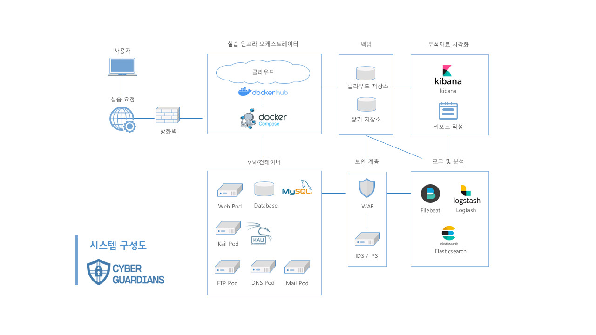
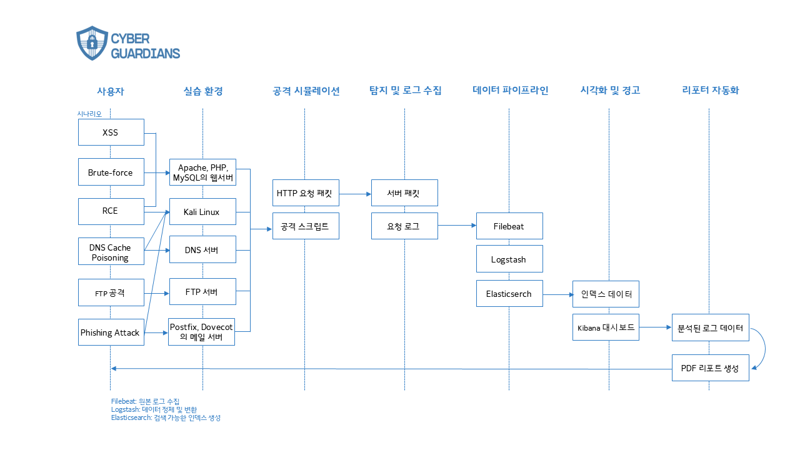

●
프로젝트 결과물
웹 서비스 UI
공격 실습이 가능한 취약점이 존재하는 웹 제공


시스템 구성도

Data Sequence


50%
2명
3 WEEKS
웹 해킹 실습 플랫폼의 웹 개발, Docker 기반 실습 환경 컨테이너화, 데이터 시퀀스 및 시스템 구성도 설계, 비즈니스 모델 설계 담당.
프로젝트의 핵심 설계 과정을 직접 수행하며 인프라 보안 아키텍처의 중요성을 알게 되었고 컨테이너 기반 환경 격리와 자동화 배포의 필요성을 배움.
Docker 기반 자동화 인프라를 처음 맡아 어려움이 많았음. 환경 격리와 네트워크 설정에서 시행착오를 겪으며 점차 익숙해져 문제를 해결할 수 있었음.
공격 실습이 가능한 취약점이 존재하는 웹 제공